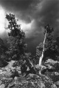
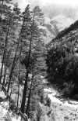
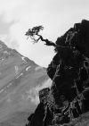
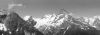
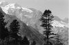

ИЗБРАННЫЕ СТИХИ
Светлана Гаделия
Март
Он приходит, увенчанный тусклой короной,
он дорогу находит без карт.
На корявом суку пожилая ворона
с торжеством констатирует: "Мар-р-рт!"
Он приходит под мерные звуки капели -
горький плач уходящей зимы -
и качает девчонку-весну в колыбели,
краски мира туманом размыв.
Словно не было раньше ни просини бледной,
ни ликующих стай воронья,
словно март этот первый, а может, последний,
почему-то запомнила я
и лиловость горы, свод, несущей над миром,
и ручья озорную дугу,
и бумажный кружок - этикетку пломбира -
на изрытом водою снегу.



Избранные публикации "ЛК"
Литературный Кисловодск. Вып.3. 1999.
Наталья Капкова.
ЭХ, БЫЛА, НЕ БЫЛА!
По военной дороге...
... Среди зноя и пыли
Мы с Будённым ходили...
А.Сурков "По военной дороге"
Эх, была, не была! В саду вишня цвела,
Колыхались в степях ковыли...
Уходили полки "на большие дела,
На рысях..." в золотистой пыли.
Молодой комиссар постоял у плетня,
что-то тихо кому-то сказал...
Эх, была, не была! - И вскочил на коня,
И по улице прочь поскакал.
А за ним триста сабель, и снова бои,
И навзрыд из родного села:
"Ой, уходят, уходят, родные мои!" -
Бабий крик... Эх, была, не была!
Сколько вёсен прошло, сколько зим, сколько лет!
И, хоть время не двинешь назад,
Может, кто-то бежит красной коннице вслед,
И заплаканы чьи-то глаза.
Эх, опять мой гнедой закусил удила...
Ну, суди, кто ни клят и ни мят, -
Голова ль удалая меня довела,
Или кто-то ещё виноват.
То-то снова у нас ни двора, ни кола,
То-то снова сидим на мели...
... Эх, была, не была! В саду вишня цвела,
Колыхались в степях ковыли...
Литературный Кисловодск. 2000. N4.
Наталья Нутрихина
Санкт-Петербург
* * *
Не будем поучать своих детей.
Они здесь родились, а мы чужие.
Мы выросли в совсем другой России
На молоке совсем иных идей.
Своих детей не будем укорять.
Нам не понять их отношенья к жизни.
Им жить в такой, какая есть, отчизне,
Раз мы им не смогли другую дать.
Нам ли судить? Ведь им куда трудней,
Чем было нам, под знаменем идущим.
Но нет знамён, есть только хлеб насущный.
Чему же нам учить своих детей?
Не будем осуждать своих детей,
Зато они осудят нас жестоко
И сами станут взрослыми до срока,
И нас простят. А впрочем, им видней.
Литературный Кисловодск. 2001. Выпуск 5
Виктор Лунев
Станица Советская
ВЫБОР
Лучше быть в изгнании поэтом,
Чем придворным - в золоте - шутом.
Лучше ярко жить на свете этом,
Чем, как тень, присутствовать на том.
Лучше непокорным, чем коварным.
Лучше разойтись, чем разлучить.
Если схватка с мраком планетарным,
Лучше в трубачи, чем в палачи.
Лучше простодырой, чем мерзавцем.
Лучше не сберечься, чем сгубить.
Много лучше быть, а не казаться.
Быть собою лучше, чем не быть.
Анатолий Асмоловский
* * *
Как расточительна в живом Природа!
Порой в творенье только жизнь вдохнула,
Ан следом Смерть и в миг свечу задула, -
Не знаю я чуднее сумасброда.
Вот так Гончар, и в том ему свобода,
Коль замыслам его не отвечает,
Изделие в ком глины превращает,
И так несчётно раз. И в глине нет отхода.
Не потому ли, что для всех начал,
Природа и Гончар в своей лепнине
Из века в век берут материал
Одних и тех же душ, одной и той же глины.
И Потаённое готовит нам Ответ -
Смерть есть лишь потому, что смерти нет.
* * *
Ни англичан и ни испанцев
К себе не звали дикари.
Возникли в море корабли
Во время их беспечных танцев.
И берег утонул в Багрянце,
Как в жерле Яростной Зари.
Так низший разумом, смотри,
Был уничтожен самозванцем.
А нынче неразумный Гений
Послал в бескрайние Миры
Наш точный адрес во вселенной
И всё о нас до сей поры...
Я б это так назвать хотел -
Безумства гибельный предел.
ОПТИМИСТИЧЕСКИЙ СОНЕТ
Плод, в материнском чреве находясь,
Не ощущает тягот заточенья.
Напротив, жизнь его без злоключенья
Течёт, тугими водами теснясь.
И полнит мир его живая связь
Чувств матери: то счастья, то тревог, -
Она больна - он тоже занемог,
Ей весело - и он живёт смеясь.
Но в неизбежный, тяжкий миг рожденья,
В крушении миров, что от зачатья,
Он испытает гибель без сомненья,
Но попадает в нежные объятья...
Не так ли мы трепещем в страхе смерти,
Но умерев, жизнь обретаем... Верьте...
Литературный Кисловодск. Январь - март 2001 года.
Юлия Каунова.
* * *
Закройте сумасшедшие дома!
Отправьте сумасшедших на войну!
Любой, кто не лишён ещё ума,
Вменит вам бессердечие в вину.
Хранит тысячелетние следы
Свидетельство на радость дуракам:
Назначено Историей в веках -
Здоровым гибнуть, гибнуть молодым.
Олег Воропаев
* * *
Ты, судьба моя - степь да ноченька,
За пятиалтын - служба-матушка.
Служба-матушка - у быстрой реки
Злого ворога сторожить-убить.
Ты, соловушка, погоди, не пой.
Над Эльбрус-горой холодна луна.
На черной воде зыбь недобрая...
Молода-жена, ой, дождётся ли?
У быстрой реки берега круты.
Ты не спи в ножнах, шашка вострая.
У полынь-травы тяжела роса -
На степном ветру горьки слёзушки.
Литературный Кисловодск. Август 2003 года - N1 (13)
Николай Чайковский
ДУБ
[фрагмент]
Кора на нём, как пахота,
Корява и черна.
Червонная рубаха
Сносилась не одна.
Стоит он - непокорный
Былинный Святогор.
И разбежались корни
Как бы отроги гор.
Он держит на закате
Под белою горой
Обрубками-руками
Щит солнца золотой...
Ольга Мельникова
ИЮЛЬ
Солнышко яркое,
Жаркое;
Небушко южное,
Душное;
Тень убегает,
Тает;
День не кончается -
Мается;
Воздуху нравится
Плавиться;
Скоро свечерится -
Верится...
Надежда Хмелева
* * *
Не даст плодов красивых пустоцвет,
Не вырастить из плевел зёрен хлеба,
Возможности делиться просто нет,
Когда душа оторвана от неба.
* * *
У ночи свой резон, свои права,
Свои законы и свои пределы...
Земная жизнь по сути такова,
Что белое не видится на белом...
Чтоб радовали зелень и тепло,
Трещат морозы и лютует вьюга.
Как ценим жизнь, когда нам тяжело,
Как понимаем мы тогда друг друга!
Алексей Антипов
АНОМАЛЬНАЯ ЛОГИКА
Не просите слишком много. Можете получить больше, чем сможете донести.
Можно и из минимума, которым тебя одарила природа, извлечь свой максимум.
Живёт себе человек хорошо и спокойно, и это не даёт ему покоя.
Всё, что зовётся целым, на самом деле состоит из половинок. Потому не стоит уповать на целостность и единство.
Прежде чем начать утверждать неразумное, человек некоторое время говорит разумные вещи. Иначе откуда бы взяться такой наглости и самоуверенности, чтобы вообще что-то утверждать.
Семён Ваннетик
МОНОЛОГ СОВРЕМЕННИКА
- Мой дед боролся за идею.
Папаша - за достойный чин,
А я о прибылях радею,
Доход - мой вечный властелин.
Сынок - бездельник. Сожалею,
Вконец отбился он от рук.
Бороться снова за идею,
По всем приметам, будет внук.
Литературный Кисловодск. Январь 2004 года - N2 (14)
Иван Помидоров
2004, ИЛИ 20 ЛЕТ СПУСТЯ
(Черновик антиутопии)
* * *
Сама собой рассосалась
Экологическая проблема:
Что бы ни обсуждалось,
Бесперспективная тема.
* * *
Снова отменяется
Гражданская война,
Недоворовали ведь
Покамест до хрена.
Олег Дегтярев
НА РЫБАЛКЕ
От водомерки круг остался на воде,
У поплавка мальки резвятся по соседству.
Я сам себя спросил: "Ты где?"
И сам себе ответил: "В детстве!"
Литературный Кисловодск. Июнь 2006 года - N22-23
Виталий Василенко
* * *
В этом городе одиннадцать литгрупп,
и писаки путешествуют по кругу -
точно лошадь цирковую бьют по крупу -
так и носятся, покуда не помрут.
Им бы лучше путешествовать в себя,
навещать почаще классиков на полке.
Говорю об этом с болью и скорбя:
бедолаги эти - овцы, а не волки.
Не сжигает сирых пламенная страсть,
Мчит по кругу их к перу слепая тяга,
Но таланта ведь у Бога не украсть,
а без Искры ты всего лишь работяга.
Без труда не вынуть рыбку из пруда...
Не мешало б запустить её туда.
9.10.2005
Они едва ли виноваты,
что заложило уши ватой
и шоры-шторы на глазах.
Что шаг верёвками стреножен,
и взлёт без крыльев невозможен,
и тянет прошлое назад.
Беда вот, что других не видно,
и время дразнится ехидно,
и мне терять его обидно,
и давит грудь.
И сам от центра до окраин
гоним, не понят, неприкаян,
и потому на сердце камень,
тоска и грусть.
14.06.2004
* * *
Остались на книжной полке,
как после чистой прополки,
лишь главные имена.
А сорняковая бездарь
не вынесла трёх переездов,
и в том не моя вина.
28.09.2005
* * *
Пишу не для себя, пишу не для собратьев,
пишу, когда меня терзает диссонанс
и скверно на душе. Когда хочу орать я
и больно за других, и муторно за нас.
27.09.2005
СТАРЫЕ КОНИ
- Как дела, дружище?
- Дрянь дела.
Нет зубов, мусолю удила.
Старость брат.
- И мне она не в радость.
Молодость, как вспомнишь, тоже гадость...
То кнутом, то шпорами в бока!
- А меня - нагайкою в охотку!
- Ну, всего...
- Пока, мой друг, пока...
- Встретимся...
- Харон подгонит лодку...
7.07.2003
Литературный Кисловодск. Сентябрь 2006 года - N24
Сергей Зубарев
КЛОУН И КЛОН
Одиночество
непреклонно.
И клоун
слепил себе
клона.
Клоун сказал:
"Мне хреново".
Клон, нет бы ответить:
"Не ново,
но я тебя
понимаю,
потому обнимаю,
целую, лелею,
радость тебе дарю
и пирожки
с мармеладом,
чтобы не был
ты грустным
гадом" -
клон сказал:
"Мне хреново".
Клоун сказал:
"Повешусь".
Клон ответил:
"Повешусь".
И побежали
наперегонки
к осине
поднебосини,
вырывая верёвочку
друг у друга.
Зевая,
ржала подруга.
Ничья.
Клоун сказал:
"Веселю.
Нужен".
Клон ответил:
"Веселю.
Нужен".
Присели
на задницу,
в грязной луже.
Сгоряча решили
не вешаться.
Господь,
равнодушен
снутри-и-
снаружи,
предпочитал
не вмешиваться.
Виктор Филин
ИЗВЕРЖЕНИЕ ВУЛКАНА - 2
Мироздание должно иметь Подвал,
А в Подвале - Овощехранилище...
Но ни в коем случае не Пороховой Склад!
НАТАЛЬЯ АСТАФЬЕВА
* * *
Взяли
у меня
отца,
мне мать сказала:
"Теперь тебе отцом Сталин будет".
Родина - мать,
Сталин - отец...
Не слишком ли много
для детских сердец?
Даниловский вал.
Детприёмник.
Там
снимают оттиски пальцев нам.
Мы дети врагов -
плакат нас приветствует:
"Спасибо товарищу Сталину за
счастливое детство".
На Красную площадь иду в Мавзолей,
иду вдоль еловых чёрных аллей...
Рыданье - как лай,
его не сдержать:
Сталин - отец...
Родина - мать...
1956
Эвклид Игнатиади
* * *
Призрак сна уходит смутный.
Алый проблеск бытия.
Поцелуй волшебный утра.
Обретение себя.
Властью ночи был украден,
В грёзы блёклые разлит...
Утром я - Игнатиади,
Облечённый в плоть Эвклид.
Стану пить в халате кофе,
Наклоняться к зеркалам,
Чтоб знакомый фас и профиль -
Свой родной - увидеть там.
Давней роскоши руины,
Щёк колючее жнивьё...
Видеть в облике мужчины
Вечно юное моё...
Словно солнце из-за тучек,
Словно благостная весть -
Этот счастья тонкий лучик,
Ощущение: я - есть!
Лев Кропоткин
ЭВРИКА
Вроде обнаружил я зависимость -
И, представьте, прецедентов масса:
Чем, "под Ильича", могучей лысина,
Тем мощнее борода "под Маркса"!
Виталий Василенко
СРП-СПР
У этих двух контор один и тот же фонд
и общий туалет и прочие удобства.
Заходит с двух сторон писательский бомонд,
на одного отца два сумеречных вдовства.
А дел невпроворот: где привинтить доску,
где рюмку пропустить во здравие и славу.
Начальники не раз вгоняют вас в тоску
и, видно, никому не стыдно за державу.
Заметно оскудел набор услуг и благ,
настороже глаза и ушки на макушке:
а вдруг захочешь ты последнее забрать,
и не оборонят ни Шолохов, ни Пушкин.
Когда бы только здесь - да так по всей стране,
и мука от ума, и горе от таланта.
И славненько, что я остался в стороне
от вашего тепла, добра и провианта.
3.06.06
Литературный Кисловодск. Сентябрь 2007 года - N27
Наталья Окенчиц
* * *
Я под солнцем погреюсь бесплатно,
Заплету озорную косичку
И цветок отыщу ароматный,
И попью родниковой водички.
Понимаешь - мне много не надо.
Променяла я "много" на "мало".
Оказалась счастливой дорога.
Потому, что от прежней устала.
Сергей Зубарев
ПОСЛЕДНЯЯ МИРОВАЯ ВОЙНА
(фрагмент)
просто жаба
душит жаба
просто жабмен
жабаевский
и жабенко
жабаян
и жа ба инь
жабашвили
жабанов...
Виктор Филин
ПО-ПРАЗДНИЧНОМУ СОЛНЕЧНО
Да здравствует Первое Апреля -
День обманутых проходимцев-мошенников
Да обворованных до нитки воров!
Елена Бовина
* * *
Гулко в ночной тиши
Упало яблоко.
Не ушибся, червяк?
Июнь 2000
Валентин Киреев
* * *
Как неразумны повторенья,
Что нас настигли и сразили.
Потерянные поколенья
Вновь нарождаются в России.
И в небесах, и в душах дыры,
И так остаточно редки
Святых надежд ориентиры,
И светлой веры маяки!..
Антон Головченко
* * *
Ты не позвонишь,
Тишину пронзив.
Всё перегрустишь
Под аперитив.
Если решено -
Значит, навсегда.
Дьявольски смешно
Ты собой горда.
Я не позвоню,
Не ворвусь извне.
Всё переборю
В дыме и вине.
Полетит на кон
Пресловутый мир
Заспанных окон
И пустых квартир.
* * *
Мастер скрипичных дел -
Что ты создал, человече?!
Души смычком задел -
Их уже не излечишь.
Пересмотри ошибки,
Вспомни хоть вскользь о том,
Как о красивой скрипке
Вздыхал молодой саксофон.
Она рассыпала звуки,
Разбавив ночной туман.
Но только чужие руки
Её обнимали стан.
Он хрипло и даже грубо
Кричал ухажёру: "Стой!"
Но только чужие губы
Ласкали его порой.
Ах, мастер, ты бог, конечно! -
Предопределил судьбу:
Влюблёнными будут вечно,
И вечно - по одному.
И скрипка теперь - тосклива,
И саксофон - хрипит.
Ах, как же теперь красиво
Страдание их звенит!
Ты рассчитал всё точно
Мастер скрипичных дел -
Легко так и между прочим
Души смычком задел.
Иван Наумов
ЦВЕТОК НА ВОДЕ
Скрипучий причал, позабытая пристань,
Корабль, уходящий в незримые дали,
Прощальные слёзы, упрёки, как выстрел,
И горечь разлуки, и призрак печали.
Отсюда уходят, ссутуливши плечи,
Сюда возвращаются бледною тенью.
Слепые надежды здесь тают, как свечи,
Горячие клятвы подвержены тленью.
Что нас заставляет сюда возвращаться,
На зыбкие сходни седого причала?
Надежда вернуть ускользнувшее счастье,
Обиды забыть и начать всё сначала?
Цветок на воде, как предвестник свиданья:
Мы верим иллюзиям, верим в приметы...
Подарит нам старый причал на прощанье
Последний глоток уходящего лета.
БРОШЕННАЯ
Обронила пёрышко на лету лебёдушка,
Обронила зорюшка на траву росу,
Небо ночью звёздною обронило зёрнышко,
Уронила девица на щеку слезу.
Исстрадалась нежная, в горе безутешная,
Тропки к сердцу милого скрыл густой туман.
Всё ему до капельки отдала ты, грешная,
Погружаясь душенькой в колдовской дурман.
Только ты не первая, кто так горько кается,
Кто с тоски бросается в волны с головой.
Вволю нацелуется, вволю наласкается,
А потом останется куковать с молвой.
Не горюй, кудрявая, не рыдай, красивая,
На заре умоешься чистою росой,
Станешь недоступною, станешь горделивою,
Молчаливой ивою с золотой косой...
Нина Можная
* * *
И гению и мелкому мерзавцу
Нужна душа, готовая всегда
За них в огонь и в воду, и - сражаться,
Сиделкой рядом быть, когда беда.
Непризнанный ещё, уже гонимый,
Без места в обществе, которое не чтит,
Он ищет места в сердце голубином.
А приголубят, отогреют - улетит.
Владимир Абакумов
ЗОРЕНЬКА
Разгорелась зоренька, расплескалась красками.
По утру любимая одарила ласками.
Одарила ласками дева окаянная.
Разбросала волосы ночь, от счастья пьяная.
Загорелись негою глазоньки безумные,
И молитву верности шепчут губы юные.
У любви, как в омуте, тонут девы горести,
В поцелуях трепетных нет уж больше робости.
Не кричите вороны, не пророчьте бедами:
Счастьем околдована. Ей грехи не ведомы.
Расплескалась зоренька, красками залилася,
Тихой нежной радости до пьяна напилася.
МОЛИТВА
Всевышний, огради меня!
Мой сильный дух в борьбе низложен,
И свет, что был Тобой заложен,
Я исчерпал к исходу дня.
Былого нет во мне огня.
Во тьме сомнений путь мой сложен.
Мой труд в терзаниях ничтожен,
Что сделать смог, всё сделал я.
Я слабости своей страшусь.
В хламиде жалкой тяжко мне
Нести смиренный крест во тьме.
Я день и ночь Тебе молюсь.
Дай твёрдость в кротости найти!
Не дай упасть в конце пути!
Лев Кропоткин
ЙОГА
(рассказ неофита)
В бессоннице зову на помощь йогу.
И вот теплеют ноги понемногу
И веки разлипаются с трудом.
Не замечая, на какой минуте,
Я засыпаю, словно йог в Калькутте,
И звонким храпом оглашаю дом.
Давалась йога мне не без мученья.
Сперва постиг азы самовнушенья,
Потом потел над позою змеи...
Я ждал, что за шипами будут розы,
Но грянувшие вслед метаморфозы
Все ожиданья превзошли мои.
Отныне я, - друзья не верят даже, -
Беседую с начальством без мандража
И пред ГАИ, как флаг, не трепещу.
Теперь не завожусь с пол-оборота
От наглого обвеса иль обсчёта
И в неудачах рыжих не ищу.
Узнать меня, и вправду, невозможно:
Не жму на газ до полика безбожно,
Когда таксист усядется на хвост.
Теперь иду всё чаще на уступки.
Теряю разум не от каждой юбки
И лью за воротник лишь через тост.
А мой иммунитет настолько вырос,
Что даже гнусный азиатский вирус, -
Тьфу-тьфу! - не так уж страшен, паразит.
К тому ж быстрей теперь соображаю,
Когда, к примеру, в блице ход рожаю
Иль рифмою хочу вас поразить...
Иные времена - иные вкусы.
Но, видно, знали, что к чему, индусы
И были с диалектикой в родстве:
Мир противоречив согласно йоге -
И чтоб тебя держали крепче ноги,
Учись, мой друг, стоять на голове!
Борис Поляков
МАЙСКИЙ ВЕЧЕР
Вечер майский. Хор лягушек.
Комариный первый гул.
Ветерок прохладный в уши
Из-за озера подул.
Зелень прёт неудержимо -
Будто слышен рост травы.
Хорошо сидеть у дыма,
Есть ушицу из плотвы.
Даже огненная стопка
Здесь не яд, а эликсир.
И мыслишка зреет робко:
До чего ж прекрасен мир!
2007
Юрий Арустамов
* * *
Кое-как удалось разобраться
в околесице жизни пустой.
Если спросят: "Вы любите Брамса?" -
я отвечу: "Я - парень простой,
как бревно и амёба... Ну, проще
не сыскать и в медвежьем углу.
И не мне в кипарисовой роще
возносить Аполлону хвалу".
Было время великих претензий,
но случилось всё наоборот.
Обойдёмся без астр и гортензий,
подналяжем на борщ и компот.
И не меткий стрелок, а мишень я,
жизнь прошла в перекрёстном огне.
Но великое чудо общенья
незаслуженно послано мне.
Под ногами библейская почва,
и хотя не хватает монет,
хорошо, что работает почта,
и не плохо, что есть Интернет.
Слава Богу, живём понемногу,
отличаем ладью от ферзя.
Слава Богу, не судят нас строго
и пока ещё помнят друзья.
Ирина Бжиская
* * *
Сюжет банален - тихий вечер,
За окнами темнеет сад...
Накинутая шаль на плечи...
Открыта книга наугад...
Не раз уж читанная книга -
знакомых строк сплошная вязь...
Не греет сердце скучность мига,
На вечер здесь остановясь.
Тугой капкан душевной лени.
Сосуд бурлящей жизни пуст.
Всего полшага к перемене
Из замкнутости в вихрь чувств.
Всего полшага... И вериги
Бесстрастности падут к ногам.
Но взгляд не оторвать от книги,
Что каждой строчкой дорога...
Владимир Васильев
* * *
Точность - истине подруга,
Дар божественный пророкам.
Дух святой снимает угол
В слоге подлинно высоком.
Стройно звучно лаконично
Сильно красочно и ново
Сокровенным мудрым личным
Делится живое слово.
Но поэзия мгновенна,
Возникает ниоткуда -
Сок мерцающей вселенной
С привкусом земного чуда.
Литературный Кисловодск. Январь 2009 года - N32-33
Борис Поляков
Хабаровск
* * *
Календари худеют быстро,
Утежеляя жизни груз,
И больше нет в вине игристом
Игры беспечной ярких муз.
Теперь строфа - лишь факт упрямый,
Вполне поэзию постиг:
Всё тяжелей глядеть на маму,
Отец совсем уже старик...
2008 г.
Юрий Арустамов
(Израиль)
* * *
Солнце падает в логово мрака,
словно птица, подбитая влёт.
И старик с беспородной собакой
по аллее неспешно идёт.
Он высок и почти безупречен,
дорогое кольцо на руке.
Это жизнь их выводит под вечер
погулять на тугом поводке.
Он идёт и прерывисто дышит.
В сердце колет. Нет-нет, отлегло.
Есть друзья, но давненько не пишут.
Есть, что вспомнить, но это прошло.
Оголтело судьба не давалась,
вырывалась, как голубь, из рук.
И нежданно нагрянула старость,
и не стало ни встреч, ни разлук,
ни ревнивой тоски, ни злословья,
ни печалей, ни радостных слёз.
Но с какой несравненной любовью
на хозяина молится пёс!
В непонятном слегка персонаже
что-то есть от меня самого.
Провожу его взглядом и даже
пожалею вдогонку его.
Но не стоит равняться судьбою -
разве мало напастей своих?
Просто я сочинил их обоих
и в ответе за этих двоих.
Елена Хоринская
Екатеринбург
ИЗ ДЕТСТВА
Лошади, лошади - пегие, сивые,
Рыжие, карие, очень красивые;
Лошади чёрные, серые, белые...
Всадники были лихие и смелые:
Не гарцевали по улицам попусту,
А пролетали над горною пропастью.
Сзади погоня, и крики, и выстрелы...
Но уносили нас лошади быстрые -
Белые, пегие, рыжие, сивые.
Карие, чёрные... Очень красивые!
Только лишь люди, смешные и жалкие,
Их называли обычными палками...
Виталий Дубко
с. Александровское
* * *
Вселенная - заботливая Мать,
своих Детей запеленала
в плоть земную,
чтобы до времени Душа
набралась сил
на небосводе озариться
яркою звездою.
Ноябрь 2007 г.
Сергей Калашников
Светлоград
ИЗГОЙ
Ветер тучами небо кроет.
Мне вдогонку кричат: "Постой!
Записался в друзья к изгоям,
Значит, станешь и сам изгой".
Сколько годы ушедшие стоят,
Забывает народ порой.
Вся толпа может стать изгоем,
А один человек - толпой.
И, как все, я - единым строем -
Выполняю закон простой:
Если станет мой друг изгоем,
Значит, стану и я изгой.
Галина Стругунова
Невинномысск
ВСЕГО ЛИШЬ ЖЕНА
Написала б в письме, что в разлуке несладко,
Что одна и одна - на работе, в семье...
Ежедневность проблем не решается гладко.
Тишина и печаль. Стынет чай на столе.
Написала б в письме, что в постели холодной
Согреваться так трудно: за окнами май,
Не заснуть до утра мне, по ласкам голодной,
Вытираю слезу. Ты прости. Только знай,
Что упрёков здесь нет: я тебя понимаю,
Что работа - она тебе мать и сестра.
Как ни больно мне знать, но судьбу принимаю,
Потому что тебе я всего лишь жена.


Литературный Кисловодск. Май 2009 года - N34
Андрей Хохлов
Москва
ШЛЯПА
Владимир Иванович Фогин -
Рабочий, а не господин -
В натуре был прост и не моден:
Все в куртке да кепке ходил.
Жена, Валентина Петровна,
Сказала, готовясь ко сну:
- Я шляпу куплю для фасона -
Обновку тебе на весну.
За шляпою вместе ходили.
Фасон подбирала жена.
Потом для порядка обмыли:
А так-то она на хрена!?
И вот в воскресенье неспешно
Владимир пошел в магазин
Походкой вальяжной, небрежной -
С женою сам друг, не один.
Что скажешь? - серьезный мужчина.
Фактуры для этого две:
Жена и другая причина,
Которая на голове.
Навстречу сосед дядя Слава:
- Друг Фогин, ты шляпу купил?
- Так точно, купили недавно.
- Ну, брат, ты меня удивил.
Снять шляпу пришлось для осмотра.
Сосед оглядел и помял,
Сказал утвердительно бодро:
- Добротный, видать, матерьял.
Оценка подобного рода
Наивной душе, как бальзам.
И шли они в гуще народа,
Довольные - не передам.
Навстречу приятель Петруха:
- Ну, Фогин, ядрена ты вошь!
-Улыбка от уха до уха.
- Ты в шляпе сегодня. Даешь!
- Да вот прифасонились малость, -
Смутился Владимир в ответ.
- Валюха моя постаралась.
- Валюха твоя - человек!
Решила, сказала и - на те!
При шляпе, дружище, поверь,
Ты выглядишь, как на параде,
Как будто начальник теперь.
Потом повстречали Коляна.
А тот - забулдыга и плут -
Промямлил слюняво и пьяно:
Какие, мол, люди идут,
И в шляпе к тому ж, тили-тили... -
А как насчет выпить, обмыть?
Ему Валентина: - Обмыли.
Уйми свою пьяную прыть.
- Ну-ну, Валентина, не дюже...
Чегой-то тебя понесло?
Иваныч и в кепке не хуже.
А тут - как корове седло.
- Что, что? Это шляпа - корове?!
Иди, куда зенки глядят.
А Фогин уж красный в обнове
И шляпе как будто не рад.
И вдруг повернулся неловко,
Лотошницу-тетку толкнул.
В ответ не сдержалась торговка:
- Куда же ты прешь, Вельзевул,
На женщину, будто насильник?!
Ну, боров! Ну, бык! Ну, село!
А шляпа, прав твой собутыльник,
Сидит на тебе, как седло...
Души иссякают резервы.
Психологи в этом правы.
И сдали у Фогина нервы:
Сорвал он убор с головы -
Обновку из чудного драпа -
И бросил, и начал кричать:
- Далась вам проклятая шляпа!
И принялся шляпу топтать.
Торговка, Колян, Валентина -
Все замерли, как сражены.
А Фогин все втаптывал в глину
Подарок любимой жены.
Литературный Кисловодск. сентябрь 2009 года - N35
Виталий Василенко
Ростов-на-Дону
* * *
Иисус сошёл с креста
для Рериха с Блаватской,
и вот они втроём вершат судьбу людей.
А Бог и Дух Святой уже не пригодятся,
а дверь заколотить
с креста возьмут гвоздей.
7.02.09
* * *
Нам всем не повезло, а думали, как лучше.
Любовь нам подменил тупой самообман.
Стрелял не Купидон,
а деревенский лучник,
и браком начался посредственный роман.
Не надо было бы,
да кто же не был глупым!
Расхлёбывать потом
приходится всю жизнь.
Но как не напоить пылающие губы,
решительно порвав
стреноживший режим!
9.02.09
Юрий Арустамов
Израиль
РОБИНЗОНЫ В ПУСТЫНЕ
Неужели я слушал Галича?
Рок, фортуна, счастливый удел -
и в глаза Александра Аркадьича
любопытно и жадно глядел?
По инструкциям и по уставам
проводились облавы и шмон,
но сражался на равных с державою
голос, спрятанный в магнитофон.
Жизнь кружится кассетою старою,
где замолкнет, не ведаешь сам.
С непокорною этой гитарою
воспаряла душа к небесам.
Это четко в мозгу оттиснуто -
стол - партером и ложей - кровать.
Поклониться бы низко, истово,
гриф гитары поцеловать...
Олег Таланов
Астрахань
ТРОПИНКА ДЕТСТВА
Посёлок в зное и дремоте.
вокруг не встретишь никого.
Лишь я один иду меж вётел
Тропинкой детства моего.
Оставил дома все дела я,
И не тревожит мой покой,
Что вот опять собака лает,
Пугая эхо, за рекой.
И лишь вороний окрик грубый
На плечи рухнул, как беда,
И жизнь моя идёт на убыль,
Как будто в воложке вода.
И с грустью помнится былое,
Когда ещё я был мальцом
И по тропе той шёл в полое
Рыбачить к воложке с отцом.
Июнь был в зное и дремоте...
Теперь со мною никого.
Лишь я один иду меж вётел
Тропинкой детства моего.
Ольга Фокина
Белая Калитва
* * *
"Рифмоплёты"...
За что обидели
нас, поэтов?
Узоры странные
мы сплетаем из слов обыденных.
Просто в них
за гранью невидимой
Разглядели мы
дальние страны,
Те, которые вы не увидели.
Литературный Кисловодск. Январь 2010 года - N36
Иван Наумов
Ставрополь
ДЕРЕВЕНЬКА
Я пришёл в родную деревеньку
После службы много лет спустя:
Наконец-то выкроил недельку,
Заглянуть в родимые места.
В добровольном, длительном изгнанье,
От родных оторванный корней,
Я томил себя воспоминаньем
Незабвенных юношеских дней.
Да и можно ли забыть такое,
Коль все время грезятся мне сны,
Как скачу мальчишкою в ночное
Охранять за речкой табуны.
Я взглянул туда, где за оврагом,
По низине расстилался луг,
Где хромой общипанный коняга
Отгонял хвостом лениво мух.
Их осталось полторы калеки,
Как издержки отшумевших дней,
Где же вы? Иль сгинули навеки
Табуны откормленных коней?
Где былое улицы кипенье?
Почему не встретила родня?
Где девчат на посиделках пенье
И мальчишек шумная возня?
Лишь в бурьяне ссохшиеся дроги,
Да колодца обветшалый сруб,
Да сидят старухи на порогах
Дряхлых, покосившихся халуп.
Но встречаю двор, где рядом с хатой
Новый дом давно кого-то ждёт -
Их с размахом строили когда-то:
Мол, сынок из армии придёт.
А сынок-то прикатил на "Ладе"
Через десять лет на пару дней.
Мать с отцом ютятся в старой хате:
Им она удобней и родней.
Здесь в трубе привычно воет ветер,
Здесь зимой трещат в печи дрова,
Здесь когда-то их родились дети,
Здесь сказали первые слова.
Только все разъехались давненько,
Нет в их сельской жизни новых вех,
И стареет наша деревенька,
Доживая свой печальный век.
Я отсюда уходил в солдаты,
А назад дорогу не нашёл,
Будто предал дом, где рос когда-то
И куда так поздно я пришёл.
Я курю и мучаюсь сомненьем:
Что же будет завтра? А пока -
Я вдыхаю с сладостным томленьем
Аромат парного молока.
Апрель 1985
Виталий ВАСИЛЕНКО
Ростов-на-Дону
* * *
В Поэзии окно
открылось на мгновенье,
и я успел одно
создать стихотворенье.
Ещё хотя бы два! -
но форточку закрыло,
и капают слова
бесстрастно и уныло.
20.01.09
* * *
Много раз бывал в Москве я
в двух шагах от мавзолея,
но ни разу не зашёл.
Что-то предостерегало
или очередь мешала, -
не зашёл - и хорошо.
А тогда считалось, плохо.
Ладно, канула эпоха.
Сам теперь хожу в собор.
Но лежит он там поныне,
идол в качестве святыни,
жизни нынешней укор.
20.01.09
Лев Кропоткин
Москва
НА ВОСТРЯКОВСКОМ КЛАДБИЩЕ
Сестрёнкам Зине (Москва), Рите (Бостон), Брату Лёне (Милвоки)
Мы вчера похоронили маму.
Не в минувшем веке, а вчера.
Забивали гвоздь, кидали в яму
Горсть земли со свежего бугра.
Всё, как прежде. Только мамы нету.
Только не стареет эта весть.
Только разлетелись мы по свету -
И собрать нас всё труднее здесь...
* * *
Эти фото на исповедь тихо зовут
Под покровом октябрьской парчи...
Если что-то случалось -
я был тут как тут,
Неотложки, больницы, врачи.
Как противится память погожему дню -
Сколь бы щедро он не золотел!..
Чуть неладно, бросал я свою колготню -
И сквозь все светофоры летел.
По сей день не остыл тех тревог перекал,
Тех заторов спасительных трасс.
Жигулёнок я свой наготове держал,
Как теперь валидол про запас.
Я седел от ночных, от внезапных звонков.
Но потом - от ЧП до ЧП -
Подменял меня кто-то и был я таков -
Пропадал в суете, как в толпе.
В безоглядные те, в те слепые года
Было молодости невдомёк,
Что большая беда, если только беда
Гонит сына на отчий порог!
Невдомёк! Эту боль до скончанья неси
С тех, застывших на фото годин.
Был я скорой, сиделкой, аптекой, такси
И так редко был попросту сын...
* * *
Ещё, слава богу, мы в силах,
Хватает тепла и раденья -
Чтоб здесь, на холодных могилах
Не свило гнездо запустенье.
Дорожка в порядке. Калитка
Отходит легко, не натужно.
От нас им - такая вот пытка! -
Не очень-то много и нужно.
В отцовскую зиму лопату
С собой захватить да перчатки.
А летом, под мамину дату,
Лопух повыдёргивать хваткий.
Ещё, не спеша, без надсады,
Как будто чему-то внимая, -
Сдирать с порыжевшей ограды
Настырную ржавчину в мае.
Такая, сестрёнка, забота -
Другого-то адреса нету:
Прийти и под старые фото,
Склонясь, положить по букету...
Юрий Арустамов
Беер-Шева, Израиль
* * *
Я, я, я! Что за дикое слово!
Неужели вон тот - это я!
В. Ходасевич. "Перед зеркалом"
Бывший сноб, привереда и денди
обернулся глухим стариком.
Он ворчит про какие-то деньги,
вспоминает невесть бог о ком.
Но, взирая на мир неохотно,
он пока не скатился на дно,
чтобы в связке таких же геронтов
оголтело стучать в домино.
То ли что-то давно отгорело
и фортуна бьет точно под дых,
то ли Муза сама постарела
и находит других, молодых.
Разбрелись все друзья по планете,
и тоска, знай, стучит у виска.
И не стоит ему в Интернете
пожилых однокурсниц искать.
И в ответ на "Привет!" и "Бог в помочь!"
головою кивать, как баран.
Не сорваться куда-то за полночь,
не зайти просто так в ресторан.
И наяды проходят, бросая
на него снисходительный взор.
Но душа - Айседора босая -
пляшет что-то свое до сих пор.
Литературный Кисловодск. Сентябрь 2010 года - N39
Виталий Василенко
Ростов-на-Дону
ПУШКИН В 1836 ГОДУ
Он всё реже и реже пишет.
Оскорбленья повсюду слышит.
Искромётности нет в помине,
и вот-вот отвернётся свет.
Молодёжь подпирает. Муза
намекает, что он - обуза.
Страшно, если перо заклинит.
Что-то надо рвануть в ответ.
16.02.2010
* * *
Свобода нужна сильным,
равенство - только слабым,
братство - чтоб навалиться
и камнями побить.
Под музыку "Марсельезы"
все трое до нас добрались.
С ними так и случилось,
как об этом пишу.
28.02.10
* * *
Они дожили до весны,
но не смогли до лета.
Теперь в мои приходят сны
и существуют где-то.
Так с днём рожденья поздравлять
явились голосами,
и это можно приравнять
к контакту с Небесами.
Сначала мама говорит,
отец вставляет слово,
беседы оживлённый ритм,
как сцены из былого.
- Как там вам?
- Очень хорошо.
- Мы больше не больные.
- Не старые.
- Инсульт прошёл.
- И даже не седые.
- А солнце?
- Всё освещено.
- Свет льётся отовсюду.
- Источник видеть не дано.
- Ну, будь!
- Спасибо, буду!
20.03.2010
Алексей Сазонов
Белая Калитва
* * *
Убрали кошек - явились мыши.
Убрали стены - упали крыши.
Убрали стражу, сломав заборы,
И той же ночью забрались воры...
Ах, не гонитесь за переменой!
Кормите кошек, крепите стены,
Платите стражам за их работу,
Чтобы осталось у вас хоть что-то!
* * *
Всё колеблется, всё меняется, -
Были лебеди, стали вороны...
Не скажу, что мне это нравится.
Не скажу, что в лучшую сторону.
Пониманием жизнь оправдана,
И Земля по-прежнему вертится.
Что потеряно, будет найдено,
А не слюбится, значит стерпится.
Так, фортуна моя бедовая,
Прилетев синеокой полночью,
Стала брагой поить медовою,
Почему-то с полынной горечью.
Литературный Кисловодск. Январь 2011 года - N40
Алексей Сазонов
Белая Калитва
ТВОРЕЦ
Жизнь - как рисунок на песке...
И я - творец не беспристрастный -
На жалком крошечном клочке
Пытался сделать мир прекрасным.
И был мой замысел неплох,
Но были скудными познанья.
На прахе прожитых эпох
Я возводил иное зданье.
В нём всё дышало красотой
И обещало стать нетленным.
Из повседневности пустой
Лепил я окна... двери... стены.
Но ветер лёгкою рукой
Вмиг разметал моё творенье!
И Вечность забрала с собой
Мои тревоги и сомненья...
Лев Кропоткин
Москва
АНШЛАГ
Где-то распри, рэкет и разборки...
Но, обожествляя полумрак,
Замирают ложи и галёрки,
Что ни представление - аншлаг!
Публике недостаёт фермента,
Что из слов, бессонницы и мук
Выдают Захаров и Фоменко,
Отпускают Волчек и Виктюк.
Ущипни себя - а ты не бредишь:
Классика затмила ширпотреб!
Так неутолима жажда зрелищ,
Будто в них недостающий хлеб.
Тяжек час. Но множатся театры.
Может, на поправку жизнь идёт,
Если от страданий Клеопатры
Горше, чем от собственных невзгод.
КНИЖНЫЕ РАЗВАЛЫ
Кто башнями, кто банками, кто барами,
Кто Долгоруким, кто его конем,
А я любуюсь книжными базарами:
Читатель жив, хоть всё гори огнём!
Он одержим синдромом Эпикура -
Любая блажь распродаётся вмиг.
Не всё здесь, правда, худлитература,
Однако же не худо: море книг.
Гора энциклопедий - для склеротика.
"Что? Где? Когда?"
С ней разоришь в момент.
И до того горячая эротика,
Что покупает даже импотент.
Хватаю книги, ошалев от зуда.
Где дефицит? Где блат? Где все табу?
Но всё ж пора уматывать отсюда,
Покуда весь не вылетел в трубу.
РАЗБЕГ
На всё про всё отпущен только век.
И тут напрасны с небом перебранки.
Хватило, видит Бог, лишь на разбег
И сбитые от нетерпенья планки.
Однако, неудачи тоже в счёт.
Не торопись их списывать в убытки.
Быть может, кто-то не с нуля начнёт,
А с той твоей сорвавшейся попытки!..
СКВОЗЬ СТРОЙ
Память бродит ночами
моими маршрутами,
Прогоняя сквозь строй годов и секунд.
И мои заблужденья, словно шпицрутены,
Снисхожденья не зная, секут и секут...
Литературный Кисловодск. Май 2011 года - N41-42
Лев Кропоткин
Москва
ПРИСТУП МИЗАНТРОПИИ
Время - в шоке.
Правит шопинг.
Этот - в рвани.
Тот - в нирване.
Пахнут смутой дни разлада.
А кому-то - Эльдорадо.
Жмём на грабли в сотый раз мы.
Кто ограблен, кто в маразме.
Как бороться
С тьмой уродства
И с дебильим
Изобильем?!
Нити рвутся.
Завтра - серо.
Культ коррупци,-
Блин! -онера.
Час кретина, анашиста,
Рекетира и фашиста.
Не хватает лишь потопа -
Смыть с эЛ. Кроппа мизантропа.
ПО СОСЕДСТВУ
Мама - выпивоха.
Дочка - наркоманка.
За окном - эпоха.
В нищем доме - пьянка..
Сбереженья жалки.
Пенсия - в обрез.
Городские свалки -
щедрый их Собес.
Никаких амбиций -
разум отрубя,
только бы забыться,
отключив себя.
Это, - зубы стисни! -
страшного страшней:
Уходить из жизни,
оставаясь в ней.
Кто душой сломался,
кто к тому близки.
Нет, они не с Марса -
наши, земляки.
Знать, на свете этом
вечный есть просчёт.
Не с того ль заветом -
вера в некий, тот?!..
ЗАМКИ
Годы нам стелят подъёмы всё круче,
Замки иллюзий нещадно круша.
Как они, друг мой, однако живучи,
Как их упрямо возводит душа.
Что-то в ней дышит наивом, не скрою,
Но не спешите корить впопыхах.
Так на земле неуютно порою -
Дайте ей чуть повитать в облаках.
Видно, нельзя ей без этих витаний,
Без воспаряющих, словно мятеж,
Замков иллюзий, дворцов ожиданий -
Карточных домиков вечных надежд...
ДОВОЕННЫЕ ФОТОГРАФИИ
Ну и позы: кто в развалку, кто в обнимку.
Если б знать, что к пожелтевшему слегка
Довоенному любительскому снимку
Прикасаться будет с трепетом рука!
Вот мы были, говорят они, какие,
Дарят щедрые улыбки навсегда...
Словно вспышка, взорвались сороковые,
Их навек запечатлевшие года.
Это время вспоминать - мороз по коже:
Соловки ли, Воркуту ли, Колыму.
Но мальчишеские губы сжать, похоже,
Не под силу было даже и ему.
Простодушным,
в старомодном облаченье, -
Кто откроет им, вмиг остужая взор,
Что подписано судьбой их назначенье.
Что им больше не сойтись
под "Фотокор"?!
Кто предскажет оглушительные сводки,
Кто беспечность их известьем оборвёт,
Что кепчонки, свитерки, косоворотки
Им сменить на амуницию вот-вот,
Что санбаты и штрафроты обживая,
Под огонь вставать им
в профиль и анфас?!
Довоенными глазами обжигая,
Что-то делают со мной они сейчас...
В каждом доме с этим на Руси знакомы.
Бьётся память в заколдованном кругу.
Довоенные домашние альбомы
Перелистывать без муки не могу.
Вновь то утро,
в суете воскресной, летней, -
Предо мной - как выживаю из ума...
Кто докажет, что была она последней -
Та вторая, мировая та чума?!
Я смотрю, смотрю на выцветшие фото.
Неужели, и над нашими склонясь,
Будет с болью так же вглядываться кто-то
В безмятежно улыбающихся нас?!
ВЕЙС ЦИ МИР!
Да, и еврей, - хоть дико это! -
И полицай, и конвоир,
В зондеркоманде, в службе гетто
И в юденрате... Вейс ци мир!
Душа ль, скажите, виновата,
Когда, охладевая вдруг,
Она под дулом автомата
Теряет человечий дух?!
Солдат нацелен инструктивно.
И не предскажет тут сам Бог,
Что продиктует инстинктивно
Ей разум, погружённый в шок.
То ли скомандует: "Бороться!" -
Ведь не бывает двух смертей,
То ль "Исполнять!", чтоб на сиротство
Не обрекать своих детей?
То ль, враз всё существо калеча,
Шепнёт: "Не ты, брат, так другой -
И соплеменникам не легче,
И сгинешь сам! Резон какой?!"
Два беспредела-антипода
Безмолвно замерли в груди.
Что зреет -
подлость или подвиг?
Гадать - судьба не приведи...
Март 2007
НА ОБОЧИНЕ
По стране, где добра несчитанно,
Начихав на её устои,
Бродят ордами беззащитные
Полудети-полуизгои.
На плечах - что-то всепогодное,
Супермода времён наркозных.
А в глазах - что-то безысходное,
Как у шариков тех, бесхозных.
Жизнь их кинула на обочины -
Постигать всей судьбой бездомной,
Как в отечестве озабочены
Безотцовщиной их обломной.
Знать не теми больны заботами
В апартаментах высших самых,
Если тыщи трубят сиротами
При живёхоньких папах-мамах.
...Сколько пастырей добродетели!
Но не ждите в том доме лада,
Где родители - не радетели
О судьбе очага и чада...
Литературный Кисловодск. Сентябрь 2011 года - N43
Анатолий Марласов
Кисловодск
ЖУРАВЛЬ
Один-единственный на область
У нас в селе журавль стоит,
К полёту дальнему способность
Он в крыльях срубленных таит.
А чтобы не взлетел над лесом
Незаменимый на селе,
Его бадья с противовесом
Удерживают на земле.
Но ни скрипучая работа,
Ни тяжесть в крыльях - ничего
Отбить желание полёта
Не могут всё же у него.
И по ночам, когда не нужен,
Такой нелёгкий на подъём,
Он над землёю спящей кружит
С противовесом и бадьёй...
Уйдёт на пенсию колодец,
Окончив миссию свою,
Противовес куда-то бросят
И снимут тяжкую бадью.
Односельчане будут сами
Ему хорошего желать,
И - захлебнётся небесами
Натренированный журавль.
Литературный Кисловодск. январь 2012 года - N44-45
Борис Поляков
Хабаровск
* * *
Как страшно быть до срока стариком!
Когда душа стареет, а не тело,
Когда не болен страстью ни о ком,
Ни до чего живущего нет дела...
Нет седины, нет старческих морщин,
Но нет давно желаний и стремлений.
Грызёт хандра без видимых причин,
Бездумно, без малейших сожалений.
Одни живут, и в семьдесят - юнцы,
Которые минуте каждой рады;
Другие в двадцать - словно мертвецы:
Пустые души и пустые взгляды.
И как же жить, когда душа пуста?
Зачем я здесь? Ни для кого нет прока,
Что доживу, быть может, и до ста
В течении всеобщего потока.
2009 г.
Андрей Канев
Сыктывкар
* * *
Стучали колеса телячьих вагонов,
По телу России неслись поезда,
В одном из которых страдала корова,
Ее в Коми край привезут навсегда.
А там, по-над Доном, пустели станицы:
Сгоняли зажитков с насиженных мест.
Мелькали в вагонах казацкие лица,
На Север они увозили свой крест.
Страдала корова по имени Машка:
Никак не понять ей, за что, почему
Ей выпала доля, рогатой дурашке, -
На Север в вагоне катиться в тюрьму.
Мой прадед, казак хитромудрый,
за Машку,
Чтоб вместе с людьми
в тот телячий вагон,
Отдал коменданту дамасскую шашку
И старый с огромной трубой
граммофон.
Корова страдала от голода горько,
От каждой в судьбе непонятной версты.
Мой дед так и выжил:
он был ей теленком...
А вдоль полосы колосились кресты.
Рябая буренка спасла человека,
Давая за сутки стакан молока.
Шел третий десяток двадцатому веку...
А я в двадцать первом живу вот пока!
* * *
Там, где лес давно уже не рубят,
Где зимой мороз всему король,
Где еще живут в бараках люди -
Там и есть поселок Вожжа-Ёль.
Он когда-то был "цветущим раем"
Из мужской и женской страшных зон.
Здесь полковник полный был хозяин,
Срок тянул писатель Лев Разгон.
Ездил я в заброшенные зоны.
Столько лет со сталинских времён
Утекло... Меняются законы -
Памяти лишь срок не отменён.
Вот она, страны великой драма,
Где ещё колючка на столбах.
Родилась тут в женской зоне мама
И взросла на зековских хлебах.
Со столба подгнившего локалки
Той колючки ржавый злой кусок
Я отрезал, намотал на палку,
В сейфе спрятал и закрыл замок.
Литературный Кисловодск. май 2012 года - N46
Борис Поляков
Хабаровск
КОММУНАЛКА
Прогорклым маслом
пахнет в коммуналке,
И старостью, и бедностью, и дном...
Спирт есть в бутылке
из-под минералки,
А значит, спать не будет нынче дом.
Над лампочкой скопилась паутина -
Колышется ажурный абажур.
А форточка стучит, как гильотина,
Играют тени в разности фигур.
Обыденная, в общем, обстановка,
Нет повода вторгаться здесь стиху.
И только у Петровича обновка -
Висит петля кручёная вверху.
2011г.
ИКАР
Почему-то решили:
нет больше на свете Икара,
Мол, стремился на свет
и сгорел, как простой мотылёк.
Только гляньте: сидит на скамейке - беззубый и старый,
Тлеет в жёлтых губах
самокрутки больной уголёк.
Да, он к солнцу летал. Не достиг...
Обломал свои крылья.
Жизнь сложилась не так, как предрёк умудрённый Дедал.
Древнегреческий миф
обернулся российскою былью,
и не помнит Икар,
о полёте ли с детства мечтал...
Наставлял он детей, а теперь -
непоседливых внуков,
Что негоже летать,
не доделав земные дела.
Да к тому же упасть с высоты -
нестерпимая мука,
рана в сердце его
до сих пор зарасти не смогла.
Тлеет едкий табак, и в дыму
всё мерещится небо,
не забыть никогда, как прекрасен свободный полёт.
Разлилась по костям
стариковская памяти нега:
окрылённый юнец
никогда-никогда не умрёт!
2011г.
ИЗМОРОЗЬ
Ветви пудрой сахарной обсыпал
Утренний кондитер Дед Мороз,
Но его стряпнёй не будешь сытый,
Только взор порадуешь до слёз.
Кто-то скажет: "Это вам не сахар!
Это бриллиантовый ажур!"
Пусть и так...
Украсил Дед с размахом
Ветви, окна - ювелирный сюр.
Ну, а в ком фантазия убога,
Скажет просто: "Изморозь сильна" -
И потащит валенки к порогу,
Где нальют игристого вина.
2012 г.
ХАРОН
У Харона скопилось немало монет,
Но он всё ещё новую лодку не купит
И всё так же в лохмотьях везёт на тот свет
Души грешных людей, с телесами их вкупе.
Раскошелься, Харон! Прикупил бы паром
Или яхту приличную с дизельной тягой.
Я вот беден, как мышь,
но пишу не пером,
А нормальною ручкой на белой бумаге.
И не хмурься! - Тоска,
наконец улыбнись! -
Пассажирам твоим
будет легче намного.
И к тому же не ты
реквизируешь жизнь,
Ты всего лишь слуга у жестокого Бога.
2012 г.
Исанна Вороновская
Моздок
ДОРОГА - МОЙ ДОМ
В местном дурдоме глухо, как в танке,
там человек человеку - сучара или пустое без имени тело,
глядящее в никуда.
Вот беднячка затюканная,
замурованная в саму себя.
Молитвы её мыком зовутся,
она по-зверьи призывает смерть.
От скорби и боли дайте испить ей
воду забвения, которая слаще и пьяней вина.
Пусть иней черствеет в провале рта,
но ей грезится радуга и благостный сад...
А за окном безбытным
снег с грязью пополам.
СОЛДАТ И ТОЛСТОЙ
Проклятый Толстой,
ты учил, что только любя врагов познаешь Бога.
Нас, утрамбованных
в свинцовую давильню, учили только убивать и умирать.
Закалённая сталь, закалённая тварь, изъеденная вшами,
злое мясо войны,
мы не просили пощады.
Мы стали огнём и железом,
печаль и мечты развеяв по ветру.
* * *
Не бейте в живот спящего в снегу.
Он, в шубейке на рыбьем меху,
хватает воздух
ртом трущобным.
В глазах тоска оловянного солдатика,
в них божьей искры нет.
Николай Герасимов
Сыктывкар
* * *
Уезжают друзья с Северов,
Словно птицы, на юг улетают.
Новый круг, новый край, новый кров
На широтах иных обретают.
То один, то другой - в перелёт...
Ну, а наша судьба - оставаться,
Обживать этот снег, этот лёд -
И за тысячи вёрст не теряться!
Сергей Каплан
1954 - 2010
МАРИНЕ АРСЕНЬЕВНЕ ТАРКОВСКОЙ
Александр, Арсений, Андрей -
крик, иголкой застрявший в гортани
у страны тиранической дряни,
забуревшей на красной заре.
Александр, Арсений, Андрей.
...Говорящие звезды созвучий
прожигают пространство сквозь тучи,
каждый звук - в миллион фонарей.
Александр, Арсений, Андрей...
А, Эр, Эн - три чарующих звука:
вдохновение, рана и мука,
а разлука - острей и острей.
Александр, Арсений, Андрей.
Три отца моих, три моих сына.
Слышу в имени ясном МАРИНА -
АЛЕКСАНДР, АРСЕНИЙ, АНДРЕЙ.
1992
Виталий Василенко
Ростов-на-Дону
* * *
Почему меня терпят с трудом?
Потому что повсюду - дурдом?!
А на мне проявляются лихо
и уродство, и неразбериха?!
Только с кем-то наладишь контакт,
замечаешь, опять всё не так,
как отметил однажды Высоцкий.
Бездуховно всё как-то, по-скотски.
Литературный Кисловодск. сентябрь 2012 года - N47
Наталья Окенчиц
Михайловск
ВИЖУ...
Мне гордиться уже нечем:
Время словно метёт в кучу
Красоту, и мечту, и вечер,
На котором была лучшей.
Только эта любовь к миру
Зацепилась в душе тайной.
Настроенье кричит: "Вира!",
Даже если дела - "майна".
А в лесу зелень всё выше,
Под ногами хрустят палки...
Крот из норки своей вышел.
Он слепой. Мне его жалко.
Подбираюсь к нему ближе -
Не заметил, грызёт жадно.
Боже мой, я весь мир вижу!
Я ещё поживу, ладно?
Алла Чотчаева
Кисловодск
ТЫ УШЕЛ
Ты ушёл, и город опустел, -
краски жизни вдруг куда-то делись,
звуки на осколки разлетелись.
Знаю, ты разлуки не хотел.
Ты ушёл, и город опустел, -
что-то очень важное как будто
вдруг во мне уснуло беспробудно.
Знаю, ты печали не хотел.
Ты ушёл, и город опустел,
и меня уже совсем не стало,
словно сердце биться перестало.
Знаю, ты мне боли не хотел.
Ты ушёл, и город опустел. -
Знаю, ты мне боли не хотел.
2012 г.
Иван Наумов
Ставрополь
ВРЕМЯ КАМНИ СОБИРАТЬ
Известно всем, что жизнь у нас одна,
Такое свыше выдано нам право:
к любви - измены горькую приправу,
а все кричат: "О, времена! О, нравы!",
и было так в любые времена,
и Жизнь нам мстит за право жить сполна.
Мы прячемся за веские слова,
но я сейчас перечислять не стану
все совершенства пушкинской Татьяны:
они на нас воздействуют едва,
зато в душе моральные изъяны
растут, как в поле, сорная трава.
Забыли мы заветы мудрецов:
так с давних пор устроено на свете,
что лада не найдут отцы и дети,
мы перестали чтить своих отцов,
хотя они ж за это и в ответе -
не мы рождали их, в конце концов.
Встает дилемма - жить или играть
слепую роль в божественном сюжете,
когда на протяжении столетий
лишь богу суждено за все карать,
а людям быть за все грехи в ответе:
настало время камни собирать.
29.12.2011
Алексей Сазонов
Белая Калитва
БАНАЛЬНЫЕ МЫСЛИ
глупо, тут нет секрета,
лезть в воду, не зная брода.
Даже холодное, лето -
лучшее время года.
здравым советам внемля,
Не затыкайте уши!
звёзды не греют землю,
Но согревают душу.
Красивое - это грустно.
Любовь - это страх потери...
Во все времена искусство
Стучит в закрытые двери.
Скучно единообразное.
Плохо ходить раздетым.
Твердя об одном, все разные
Имеют в виду предметы.
Нищий и от полтинника
Может познать блаженство.
Даже святые иноки
Плачут о несовершенстве...
от колыбели - к тризне
Надежда всех за нос водит.
Мудрые смысл жизни
Ищут и не находят.
Судьба - фейерверк случайностей -
Нас лепит, как пекарь тесто.
Бог создал людские странности,
Чтоб жизнь не казалась пресной.
грешнику - смысл каяться,
Вору - точить отмычки.
Что от тебя останется,
Если убрать привычки?!
Многие бородатые,
Только не все - Толстые.
Чаще бывали распятыми
Преступники, чем святые...
Когда говорит оружие,
Тогда и законы - немы.
Блаженны умом недужные,
Но сами они - проблема!
В воздухе тает сказанное,
Написанное - остаётся.
Правда бывает разною;
Истиной что зовётся?
Свои у каждого сложности.
Квартира - ещё не крепость!
Бумага - символ надёжности:
хранит любую нелепость!..
КТО КОГО?
Всё пройдёт, что сердцу мило.
Жизнь права, и смерть права!
На заброшенных могилах
К солнцу тянется трава:
рви её, топчи ногами,
Торжествуй, пока живой! -
верх она возьмёт над нами,
Прорастёт над головой...
Виталий Василенко
Ростов-на-Дону
* * *
Я укрылся от сует,
на меня никто не ставит,
постепенно время старит,
затемняя белый свет.
я всё чаще в стороне
и всё больше наблюдатель,
и совсем уж не мечтатель,
не пророк в родной стране.
20.03.05
Литературный Кисловодск. февраль 2013 года - N48-49
Снежана Андрианова
* * *
Я Золушка на жизненном балу:
Всегда спешу в урочный час уйти,
И будет принц прекрасный поутру
над туфелькой вздыхать, а я - в пути...
А дома ждут привычные дела.
Вот только доброй феи в крёстных нет;
И вместо чувств - остывшая зола,
И в башмачке - окурки сигарет...
Исанна Вороновская
Моздок
В ПУТИ
Тула тусклая
скрипучая от пыли и трамваев
встретила ржавою дружелюбностью
сказала - радуйся
случайному и уличному
ведь всё недолго и невелико
И я свободная от огорчений Вчера
и неумолимостей Завтра
тороплюсь бездумно безадресно
зачеркивая тупики
и на городских окраинах
выбрасываю вопросы
как камни из карманов
Избранные стихи авторов "Литературного Кисловодска"
Стихи из "Литературного Кисловодска"
Стихи из "Литературного Кисловодска" (авторские страницы)
Поэмы из "Литературного Кисловодска"
Страница "Литературного Кисловодска"
Страницы авторов "Литературного Кисловодска"
Последнее изменение страницы 1 Apr 2022
ПОДЕЛИТЬСЯ: